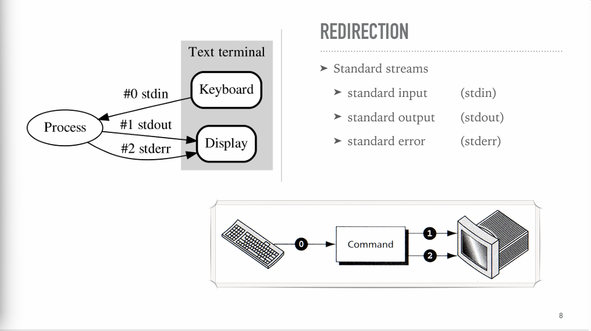

Unix Operating System
Note: This lecture is summarized from the "Unix Operating System and Shell Programming Class" by Dr. Chavalit SRISATHAPORNPHAT, Department of Computer Science, Faculty of Science, Kasetsart University, Thailand.
Basic Shell Commands
Redirection
{kind=link}

> (redirection) | 1>... (redirection stdout)
| 2>... (redirection stderr) wc < file1.txt (redirection input)ls -l file1 noFile 1>out.txt 2>&1 (Redirecting to one file)TEE
- Copy stdin to stdout and to file(s)

ls -l file99 1>/dev/null 2>&1 // ส่งstdin stderr
เข้าใน trash /dev/nullPrevent overwriting
set -o noclobberShell variables
Stored data -> variable=value
Reference -> $variable
Unset -> unset variable
Display -> echo $variable, set
File System & Permissions
Unix File Types
- : Regular file
d : Directory
l : Link
c : Special file
s : Socket
p : Named pipe
b : Block device
Path
- Absolute path
/etc/file1- Relative path
../usr/staff/joan/file3Directory Contents
- inode (Index node) = data structure store information of files
- Soft Link (Symbolic link)
ln -s <existingFile> <newLink>- Indirect link to a file
- pointer to a originak file
- Different inode number

- Hard Link
ln <existingFile> <newLink>- Different name of the same file
- Same inode number
- link ผ่านเลข inode ใน directory และ physical file ใน data block โดยตรง (คล้าย ๆ เหมือนกับการ copy file)

File and Directory Permission
- Permission code is used to indicate permission of user / group / other

- Changing Permission - chmod
chmod [-R] <modes> <file/directories>

- User Masks
- Default permission
- File : 666
- Directory : 777
- Default permission
umask 022 (default on bash)
// Calculation
Directory permission : 777 - <umask - 222> = 755
File permission : 666 - <umask - 222> = 644
Advanced bash Commands (Filters)
cat
- concatenate files and print on stdout
cat > filename
- Display content of file 1 file2 and all files to stdout
cat file1 file2 ...
- Display content to stdout
cat filename // -n : display line number -v : display control characters -E : display $ at the end of lines -T : display TAB -A : shortcut of -vET
head
- Displaying Beginning of Files
head filename
// display first 10 lines to stdout
head -n filename
// display first n lines of filenames to stdout
head file1 file2
// display first 10 lines of all files to stdout
tail
- Displaying end of files.
tail filename
// display last 10 lines of filename to stdout
tail -n filename or tail --lines=n filename
// Display last n lines of filename to stdout
tail --lines=+20 filename
// Display all lines starting to line no 20 to stdout
tail -cn filename
// Display the last n characters of filename to stdout
tail -f filename
// Output append data as filename grow
cut
- Cut by specifying column number
cut -c<column list> filename
// 1-2 or 1-2, 6, 8- cut by specifying field number
cut -f<field list> -d<delimiter> filename- Field list : 1-2, 4
- delimiter
- -d ‘ ‘ : space as delimiter
- -d ‘#’ : using # as delimiter
- -d ‘$/t’ : using as tab delimiter
paste
- combine lines together.
paste file1 file2
// append at the end of line file2 to file1
paste -d '#' file1 file2
// use '#' as delimiter before appending on each line from
2 file
** Default delimiter is TAB
tr
- Translate / squeeze and or delete character from stout
tr -s ' ' < file1
// Squeeze multiple of space into 1 space
tr 'abc' 'xyz' < file1
// Replace 'a' with 'x', 'b' with 'y' and 'c' with 'z'
tr -d ',' < file1
// Delete all ',' from file1
sort
- sort by lines
- (each line sorted based on ASCII values)
- sort by fields
- filed are seperated by ‘delimiter’ (default is TAB) -t
- filed number as 1, 2, 3
- field specifiers : -k start[,stop] or - - key=-start[,stop]
- -k 1 (sort field start at 1 to EOF)
- -k 3,4 (dort fields 3 and 4)
sort filename
// -n : numeric sort
uniq
- Delete duplicate lines, keeping first only and other non-adjacement
uniq filename
- Keep only all other non-adjacent duplicates
uniq -u filename
- Keep only one line in each adjacent and ignore all
uniq -d filename
- count number of adjacent duplicate lines
uniq -f n filename
- skip n field / skip n characters
uniq -f n filename (skip n field) uniq -s n filename (skip n characters)
Comparing Files
- cmp
- compare 2 files byte by byte
- -l : list all different bytes in octal code
- -s : suppress output but set the result in $? variable
- compare 2 files byte by byte
- diff
- compare 2 file line by line, ทำยังไงให้ file1 เหมือน file2
- -b : ignore trailing blanks
- -w : ignore whitespace
- -i : ignore case
- compare 2 file line by line, ทำยังไงให้ file1 เหมือน file2

tar
- Packing files - Pack all files under path into tarFile.tar
tar cf tarFile.tar path/file...
- List files
tar tf tarFile.tar
- Unpacking files - Unpack all files from .tar to current directory
tar xf tarFile.tar
gzip
- Compress a file to file.gz
gzip file
- Uncompress a file - uncompress file.gz into file
gunzip file.gz
- Combination with tar (.tar.gz)
tar zcf file.tgz path tar zxf file.tgz
find
- find files with maching name (’*sh’) inside working directory
find . -name '*sh'
- options:
- -maxdepth n
-mindepth n- n -depth level of directory to find
- -type t
- t -file type
- -cmin n
- n -minute(exactly), +n -minute(greater than), -n -minute(less than)
- -maxdepth n
Regular Expression and Grep
Grep
- search input that match specified regex and print them to stdout.
- Grep cannot
- add, delete or change a line.
- print only part of a line.
- read only part of a line.
- select a line based on prev or next line.
- Type of grep
- grep → handle all of REs use unless need alternation.
grep -n ";$" FILE | head -5
- fgrep → fast if search require only sequence of expression
fgrep -n "'" FILE
- egrep → allow more complex RE patterns.
egrep -n '^[A-Z].*!.$)' FILE
- grep → handle all of REs use unless need alternation.
Atom
- Dot “.” : matches single character, except the ‘\n’
- Class “[ ]” : Any on of them may match any char in text.
- Special tokens
- Ranges: - example: [a-d]
- Exclusion: ^ example: [^aeiou]
- Escape: \ example: [^\^]

- Special tokens
- Anchors : Define next character must located in the text.
- ^ → beginning of line
- $ → end of line
- \< → beginning of word
- \> → end of word

Class : Back References
- There are 9 save buffers
- can save text into one of these
- To refer back uses “\n”, where n is number of buffer - [1-9]
- \1 \2 … \9
Operators
- Overview of Operators

- Sequence


- Alternation “|”

- Repetition


- Greedy Pattern Matching
- Longest possible string of characters that matches a pattern should be used

- Longest possible string of characters that matches a pattern should be used
Group
- group matching

Save
- save in buffer

sed - Stream Editor
sed - introduction
- sed is not true editor - it doesn’t change original file.
- it’s scan input file, line by line
- can be a seperate file or included in the sed command line.

sed - Operation
- Perform following instruction
- Copies an input line to pattern space
- Applies all instruction in scripts, one by one, to only line in pattern space that match the specified addresses in instruction.
- Copies content of pattern space to output file (except when -n is used)
- Input file is not changed.

Addresses
- Is an instruction determines which input file are to be processed by the command in the instructions
- When is no address , every line is match
- Can be one of 4 types

Addresses : Single-Line
- Specifies one and only one in the input file
- A line number or a dollar sign ($)

- A line number or a dollar sign ($)
Addresses : Set-of-Line
- Regex that match zero or more lines in the input.

Addresses : Range
- Defines a set of consecutive lines with the format
- start-address, end-address
- addresses can be line-number or regex.

Addresses : Nested
- An address that is contained with another address.
- Example
- delete all blank lines between lines 20 and 30
20, 30 { /^$/d }
- delete all lines that has “Raven” that also contains “Quoth”
/Raven/{ /Quoth/d }
sed : Commands
- There are 25 commands can be used in instruction
- Can be grouped in 9 categories.

- delete all blank lines between lines 20 and 30
Commands : Modify
- Modify commands are used to insert, append, change or delete one or more whole lines.

Commands : Insert
- Add one or more lines directly to the output before the address.

Commands : Append

Commands : Change and Delete
- Change command (c)
- Replaces a matched line with new text.
- Delete pattern space command (d)
- Delete the entire line (in pattern space)
- Delete only the first line command (D)
- Delete only first line in pattern space
- can be more than 1 pattern space.
- After delete the first line, if pattern space
- Is not empty, does not read next input file.
- Is empty, read next input file
- Start executing from the first line of scripts
- Delete only first line in pattern space
Commands : Substitute
- Substitute command replaces text that selected by RE with replacement string.
- Format and sed’s regular expression

- Substitution back references
- Two types of back references

- Two types of back references
- Back References
- Whole pattern substitution

- Numbered buffer substitution

- Whole pattern substitution
- Flags
- Global flag (g)
- substitute all event in the match line - only first event in default

- substitute all event in the match line - only first event in default
- Specific event flag (n)
- Only one specific event can be changed in one command

- Only one specific event can be changed in one command
- Print flag (p)
- with -n option, print flag only specifies the line to be printed out.

- with -n option, print flag only specifies the line to be printed out.
- Write the flag (w)
- Write output to specified file instead to stdout
- Can be only one space between w and filename

- Global flag (g)
Commands : Transform “y”
- Require two parallel sets of characters
- Each character in the first string represent second value in the second string. (in each char)

Commands : Input / Output
- Allow us to control the input and output.
- There are 5 input/output commands:

Input / Output : Next “n”
- forces sed to read next text line of the input file.
- before reading next line, it copies entire contentss to pattern space an delete current text in pattern space, scripts continues frrom command afterr ‘next’ - without return to top of scripts.

Input / Output : Append Next “N”
- Adds next input line to the current contents of the pattern space
- If no more input line, script exits


Input / Output : Print & Print First Line
- Print (p) copies current contents of pattern space to stdout.
- Print first line (P) command copies only first line in patten space to stdout

Commands : Files
- Read file command (r) reads file and places contents in the output before moving to next command.
- Write file command (w) writes (appends) the contents of pattern space to file.

- Files : Read example

- Files : Write


Commands : Branch
- Use to skip some sed commands in script file.
- Each command must have a target
- a label - a line begin with a colon, follows by a label name
( ≤ 7 characters) by itself
- :comHere
- the last instruction in the script (a blank label)
- a label - a line begin with a colon, follows by a label name
- Each command must have a target
- 2 branch commands
- branch command (b)
- branch on substitution command (t)
- Branch : example

- Branch on Substition : example

Commands : Hold Space
- There are 5 commands used to move text ack and forth between pattern space and hold space
- Hold and destroy (h)
- Hold and append (H)
- Get and destroy (g)
- Get and append (G)
- Exchange (x)

- Example

Commands : Quit
- Terminates the sed script


AWK
- behavior:
- reads input file, line by line, and performs action on part of or on the entire line.
- does’nt print the line unless sepcifically told to do so.
- Execution
awk 'pattern{action{}' input-file awk -f scriptFile.awk input-file
- Field and Records : Data file

awk Variables
- User-defined variables
- var name : start with letters, follows by letters/digits/underscores
- initially created as strings (null string)
- System Variables

- awk Scripts

- Operation Example

Patterns
- Indentifies which records in the file are to receive an action.

- BEGIN / END
- BEGIN : true at the beginning of the input file, before the first record is read. and used to initialize script before processing any data.
- END : used at the conclusion of scripts.
Both are optional and can be rerplaced anywhere in a script file.
Expressions
- Main of expressions

Expression : Regular Expression
- Same as RE defined in egrep.
- RE in awk
- enclosed in /slashes
- require one of two operators
- ~ match operator
- !~ not match operator
when there is no operator RE could matych anywhere in the input line.
$0 ~ /^A.*$/ $3 !~ /^ / $4 !~ /bird/
Expression : Arithmetic Expressions
- Match record if the result of arithmetic expression is nonzero (true)

Expression : Relational Expressions
- Comparing a string with a number
- Number is converted to a string first
- Force converting string to be numeric
- by addding 0 to it
- Force converting a numeric to be string
- by appending a null string (””) to it

- Example

Logical Expressions and Nothing
- Used to combine two or more expressions
- ! expr
- expr 1 && expr 2
- expr 1 || expr 2
- Nothing
- with no pattern , awk applies action to every input line.
- Example

Range Patterns
- Associated with a range of records or lines.
- Format
- start-pattern, end-pattern
awk 'NR == 8, NR == 13 {print NR, $0}' file1
Actions
- similar to C programming langauges.
- But oly act when patterrn is true.

Basic awk Statements

- Expression
- Same as in patterns.
- The value of expression is ignore.
{$2 = 6}, {total += ($6 + 4)}
- Output
- print
- print - print thw whole record
- print $1, $2 - print specific values
- printf and sprintf
- Similar to those in C
- print
- Examples

Decision Statements
- if-else
- Similar to C

- Example

Control Actions : next
- Next
- Stop processing the current record.
- Start processign the next recorddd from the beginning of the script

Control Actions : getline
- getline
- Stop processing current record, read the next record.
- Start processing next record with the rest of script.
- Note
- Input can be directed tp $0 - by default
- Input can be directed to a seperate variable
- Return value can be evaluated
- 1 - if record is successfully read
- 0 - end of file
- -1 - read error
- Input can be read from another file
- Syntax
- getline variable < other-input-file
- Ex.
- getline var < “filename”
- Ex.
- getline variable < other-input-file
- Example

Control Actions : exit
- exit
- terminate script and start executing the end statements
- if exit is in the end pattern, script exits immediately
- Should be used in error condition
- return value specified

Loops : while

Loops : for

Loops : do-while

Associative Arrays
- awk arrays are known as associative arrays
- Use strings for array indexes
- Index entry is associated with the array element
- Design constraints
- Index must be unique, but data may be duplicatedd
- No ordering imposed on the indexes
- Array index cannot be sorted
- Data values in the array can be sorted
- Example : an array A
Index : "Rob", "George", "Jan", "Jone" Data : 23, 19, 20, 20 A["Rob"] = 23, A["George"] = 19, ... awk -f awk02-ex01.awk name-age.dat
Array Loops
- for…in
- Format
- for (index_variable in array_name)
- Format
- Check whether an index exists
- if (”magazine” in deptSales)
- Return true if magazine is an index
- if ($2 in deptSales)
- if (”magazine” in deptSales)
- Delete array entry
- delete array_name[index]
Array Sorting (data)
- Sort only “data” in an array
- n = asort(deptSales)
- all indexes are changed to [1..n], while
- array data is sorted ascendingly (from index [1] to [n])
- NOTE : original array indexes are lost!
- n = asort(deptSales)
- n = asort(deptSales, newArray)
Array Sorting (indexes)
- Sort only “indexes” in an array
- n = asorti(deptSales)
- all indexes are changed to [1…n]. while
- Original indexes become array data
- The resulting array is sorted ascendingly by it’s data (from index [1] to [n])
- NOTE : original array data are lost!
- n = asorti(deptSales, newArray)
Array : Display by their sorted indexes

String Functions
- Length
- Return number of characterrrs in string parameter
- Format
- length (string)
- Index
- Return first position of substring within a strin, or 0 (zero) if not found.
- Format
- index (string, substring)
- Substring
- Extract a substring from a string
- Format
- split (string, array)
- split (string, array, field_seperator)

- Substitution
- Substitution one string value for another
- Return true (1) if success, otherwise false (0)
- Format
- sub (regexp, replacement_string, in_string)
- If omitted, in_string = $0

- Global Substitution
- gsub (regexp, replacement_string, in_string)
- Returns the numberr of substitutions made
- Match
- Return the starting position of matching expression in line, or 0 if no matching.
- Set 2 system variables
- RSTART - starting position
- RLENGTH - length of the matching text string
- Format
- Startpos = match (string, regexp)

Math functions
- rand()
- srand(seed)
- cos(x)
- exp(x)
- log(x)
- sin(x)
- sqrt(x)
User-defined Functions
- Format
- function name(parameter-list)
{ code }

- function name(parameter-list)
Awk Command-line Arguments
- ARGC - argument count
- not including options to awk
- ARGV - array of cmdline argument
- index starts from 0 to (ARGC-1)

Awk Command-line Variables
- Option -v
- used to send values to variables inside awk scripts

Shell Programming 1
Listing Running Processes
- jobs
- ps -f

Parent and Child Processes
- PPID
- Every process has a parent process.
- Each new command is run in a child process
- Current shell waits for the child process to complete
- To let the current shell runs a new command
- Use . or source
- To let a new command runs in the current process
- Use exec, current process will replacedd by new process (of new command)
- To kill a processd
- kill %<job id>
- kill -<signal_type> process_id
A Simple Shell Script
- A file contains commands that shell can execute
- (at least) chmod u+x <script> is required to run it.
#!/bin/bash
# My first shell script
date
echo "Users currently loggedd in"
who- Specifying a shell to run the script
- OS involks program specified after “#!” characters in the scripts to execute rest of the scripts
- Comments
- Any text after a # in any location until the end of line.
- First line starts with a #! (shebang) is to tell shell to invoke program specified after #! to handle rest of the script
Arguments and Positional Parameters
- Command line arguments put in the postional parameters $1, $2, .. ${10}, …
#!/bin/bash
# My first shell script
head $1
echo ...
tail $1- $0 is the command itself
- $* list of all arguments
Expression
- Expression in shell scripts
- Mathematical
- Relational
- File
- Logical

Mathematical Expression
- Only integer operations are valid
- Operators

- let or double parenthesis

- Math. Exp.

Relational Expression

File Expressions
- lecture

Logical Expressions
- lecture

Control Flow : if-then-else

- if command evaluates the exit status of the command following if
- True or 0, commands after then are run
- False or 1, commands after else are run

Script Termination
- exit
- Terminate the script and sets the exit status
- exit status is kept in system variabble $?
Shell Programming 2
case

while loop

until loop
- opposite of while loop

for … in loop

select
- Creating Menu in Shell Scripting
select ITEM in [LIST]
do
[COMMANDS]
done- custom prompt can uset using the PS3 (environment variable)
PS3="Enter a number: "
select character in Sheldon Leonard Penny Howard Raj
do
echo "Selected character: $character"
echo "Selected number: $REPLY"
doneLoop Control Statements
- break and continue

Special Parameters and Variables
- $0 - Script name
- $# - Number of arguments
- $*, $@ - All Parameters

Changing Positional Parameters
- Positional parameters can be changedd with set statement

Shift Command
- shift work by shifting the values of positional parameters to the left, one value at a time.

Shell Programming 3
Functions (1)
- Writing functions
- Functions must be placed at beginning of the file.
- Passing arguments to function is similar to passing arguments to a command line.
- Functions read them in a form of positional parameters.
- Function format

Functions (2)
- Local variables
- By default, all variables are global.
- Modifying a variable in function changes it in the whole script.
- To create local variables, use the local command.
- local var=value
- local varName
- local command can only be used within a function

Functions (3)
- Returning Values
- return <status>
- #status is 1-byte unsigned int (0-255)
- if no status specified, ‘return status’ of previous command is returned.
- The return value is stored in exit status ($?)

Functions (4)
- Returning Values
- Return a string/word

- Return a string/word
Argument Validation
- $# could be used to validate input
- Fixed number of arguments
- Minimum number of arguments
- Numeric arguments
- File type validation

Debugging Scripts
- Debug options included in the script

- Debug options on the command line
- bash -o xtrace <scriptname>
Variable Evaluation
- To access a variable
- $var_name
- ${var_name}
- cp $file $file.bak
- cp $file ${file}.bak
- Also be used in variable substitution
- ${!var_name}
- Use the value of var_name as name of variable (indirect reference)
Variable Substitution

- Substitute If Variable Null (-)

- Substitute If Variable Not Null (+)

- Substitution Assignment (=)

- Substitution Validation (?)

Substring Expansion

Pattern Matching in Bash


Miscellanueous Operators
- Length operator
- ${#var}
- Return the length of the value of var as a string
- ${#var}
- Command substitution
- $ (command)
- Output from stdout of the command is returned
- Backward compatible with backquotes:
cmd
- $ (command)
Arrays

Arrays (2)
- Note that
#symbol is used to determine the length or count of a variable or array.

Arrays (3)

Shell Script I/O
- File - oriented I/O
- Rredirections
- Pipes
- echo/printf
- Interactive I/O
- read
- echo/printf
- File-oriented I/O is more preferable
- Dur to it’s automaticity in nature
echo


printf
- C-style printf
- Additional bash printf specifiers
- %b
- Expands echo-style escape sequences in the argument string
- printf "%s\n" 'hello\nworld'
- Expands echo-style escape sequences in the argument string
- %q
- Prints the string argument in such a way that it can be used for shell input
- printf "%q\n" 'greetings to the world'
- Prints the string argument in such a way that it can be used for shell input
- %b
read

Process ID and Job Numbers

Signals

Processs ID variables
- $$
- process ID of the current shell
- $!
- process ID of the most recently invoked background job
- Practice
- Write a script to test these two variables
trap

trap : Clean up temporary files

wait

Subshells